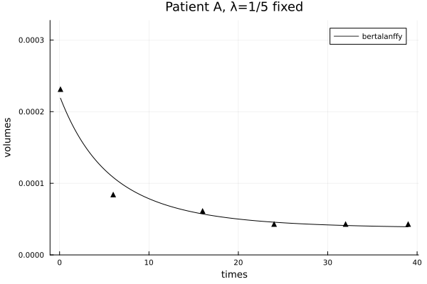
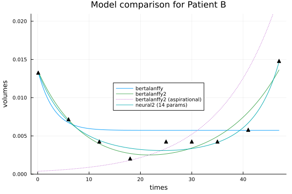
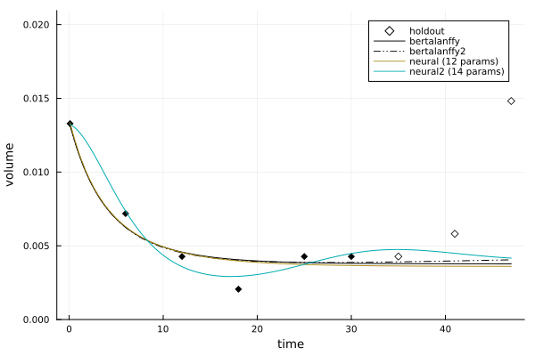

Calibration workflows
The code below is also available in notebook form.
dir = @__DIR__
using TumorGrowth
using Statistics
using Plots
using IterationControl
Plots.scalefontsizes() # reset font sizes
Plots.scalefontsizes(0.85) Activating project at `~/GoogleDrive/Julia/TumorGrowth/docs/src/examples/03_calibration`
Data ingestion
Get the records which have a least 6 measurements:
records = patient_data();
records6 = filter(records) do record
record.readings >= 6
end;Helpers
Wrapper to only apply control every 100 steps:
sometimes(control) = IterationControl.skip(control, predicate=100)sometimes (generic function with 1 method)Wrapper to only apply control after first 30 steps:
warmup(control) = IterationControl.Warmup(control, 30)warmup (generic function with 1 method)Patient A - a volume that is mostly decreasiing
record = records6[2](Pt_hashID = "19ce84cc1b10000b63820280995107c2-S1", Study_Arm = InlineStrings.String15("Study_1_Arm_1"), Study_id = 1, Arm_id = 1, T_weeks = [0.1, 6.0, 16.0, 24.0, 32.0, 39.0], T_days = [-12, 38, 106, 166, 222, 270], Lesion_diam = [14.0, 10.0, 9.0, 8.0, 8.0, 8.0], Lesion_vol = [1426.88, 520.0, 379.08, 266.24, 266.24, 266.24], Lesion_normvol = [0.000231515230057292, 8.4371439525252e-5, 6.15067794139087e-5, 4.3198177036929e-5, 4.3198177036929e-5, 4.3198177036929e-5], response = InlineStrings.String7("down"), readings = 6)times = record.T_weeks
volumes = record.Lesion_normvol;We'll try calibrating the generalized Bertalanffy model, bertalanffy, with fixed parameter λ=1/5:
problem = CalibrationProblem(
times,
volumes,
bertalanffy;
frozen=(; λ=1/5),
learning_rate=0.001,
half_life=21, # place greater weight on recent measurements
)CalibrationProblem:
model: bertalanffy
current solution: v0=0.000232 v∞=4.32e-5 ω=0.0432 λ=0.2The controls in the solve! call below have the following interpretations:
Step(1): compute 1 iteration at a timeInvalidValue(): to catch parameters going out of boundsNumberLimit(6000): stop after 6000 stepsGL() |> warmup: stop using Prechelt's GL criterion after the warm-up periodNumberSinceBest(10) |> warmup: stop when it's 10 steps since the best so farCallback(prob-> (plot(prob); gui())) |> sometimes: periodically plot the problem
Some other possible controls are:
TimeLimit(1/60): stop after 1 minuteWithLossDo(): log toInfothe current loss
See IterationControl.jl for a complete list.
solve!(
problem,
Step(1),
InvalidValue(),
NumberLimit(6000),
GL() |> warmup,
NumberSinceBest(10) |> warmup,
Callback(prob-> (plot(prob); gui())) |> sometimes,
)
gui()[ Info: final loss: 5.190581338811233e-10
[ Info: Stop triggered by NumberLimit(6000) stopping criterion.
p = solution(problem)
extended_times = vcat(times, [40.0, 47.0])
bertalanffy(extended_times, p)8-element Vector{Float64}:
0.00022152247503693192
0.0001180049861840984
5.990483693858979e-5
4.433878258915783e-5
3.731322416306445e-5
3.4181697237280434e-5
3.386717191488983e-5
3.225813777978713e-5plot(problem, title="Patient A, λ=1/5 fixed", color=:black)
gui()
savefig(joinpath(dir, "patientA.png"))"/Users/anthony/GoogleDrive/Julia/TumorGrowth/docs/src/examples/03_calibration/patientA.png"Patient B - relapse following initial improvement
record = records6[10]
times = record.T_weeks
volumes = record.Lesion_normvol;We'll first try the earlier simple model, but we won't freeze λ. Also, we won't specify a half_life, giving all the data equal weight.
problem = CalibrationProblem(
times,
volumes,
bertalanffy;
learning_rate=0.001,
)
solve!(
problem,
Step(1),
InvalidValue(),
NumberLimit(6000),
)
plot(problem, label="bertalanffy")
gui()[ Info: final loss: 0.00010518082495583373
[ Info: Stop triggered by NumberLimit(6000) stopping criterion.
Let's try the 2D generalization of the generalized Bertalanffy model:
problem = CalibrationProblem(
times,
volumes,
bertalanffy2;
learning_rate=0.001,
)
solve!(
problem,
Step(1),
InvalidValue(),
NumberLimit(6000),
)
plot!(problem, label="bertalanffy2")
gui()(Plot appears below.)
[ Info: final loss: 0.0001486220557414735
[ Info: Stop triggered by NumberLimit(1000) stopping criterion.
[ Info: final loss: 0.0001486220557414735
[ Info: Stop triggered by NumberLimit(1000) stopping criterion.
[ Info: final loss: 1.0981748197354352e-5
[ Info: Stop triggered by NumberLimit(6000) stopping criterion.
Here's how we can inspect the final parameters:
solution(problem)(v0 = 0.013418165323626751, v∞ = 0.0003759183541925138, ω = 0.12123897563008784, λ = 1.0752692228665386, γ = 0.7251887879657256)Or we can do:
solution(problem) |> pretty"v0=0.0134 v∞=0.000376 ω=0.121 λ=1.08 γ=0.725"And finally, we'll try a 2D neural ODE model, with fixed volume scale v∞.
using Lux, RandomNote well the zero-initialization of weights in first layer:
network2 = Chain(
Dense(2, 2, Lux.tanh, init_weight=Lux.zeros64),
Dense(2, 2),
)Chain(
layer_1 = Dense(2 => 2, tanh_fast), # 6 parameters
layer_2 = Dense(2 => 2), # 6 parameters
) # Total: 12 parameters,
# plus 0 states.Notice this network has a total of 12 parameters. To that we'll be adding the initial value u0 of the latent variable. So this is a model with relatively high complexity for this problem.
n2 = neural2(Xoshiro(123), network2) # `Xoshiro` is a random number generatorNeural2 model, (times, p) -> volumes, where length(p) = 14
transform: logNote the reduced learning rate.
v∞ = mean(volumes)
problem = CalibrationProblem(
times,
volumes,
n2;
frozen = (; v∞),
learning_rate=0.001,
)
solve!(
problem,
Step(1),
InvalidValue(),
NumberLimit(6000),
)
plot!(
problem,
title = "Model comparison for Patient B",
label = "neural2",
legend=:inside,
)
gui()[ Info: final loss: 4.9467503956431245e-6
[ Info: Stop triggered by NumberLimit(6000) stopping criterion.

savefig(joinpath(dir, "patientB.png"))"/Users/anthony/GoogleDrive/Julia/TumorGrowth/docs/src/examples/03_calibration/patientB.png"For a more principled comparison, we compare the models on a holdout set. We'll additionally throw in 1D neural ODE model.
network1 = Chain(
Dense(1, 3, Lux.tanh, init_weight=Lux.zeros64),
Dense(3, 1),
)
n1 = neural(Xoshiro(123), network1)
models = [bertalanffy, bertalanffy2, n1, n2]
calibration_options = [
(frozen = (; λ=1/5), learning_rate=0.001, half_life=21), # bertalanffy
(frozen = (; λ=1/5), learning_rate=0.001, half_life=21), # bertalanffy2
(frozen = (; v∞), learning_rate=0.001, half_life=21), # neural
(frozen = (; v∞), learning_rate=0.001, half_life=21), # neural2
]
n_iterations = [6000, 6000, 6000, 6000]
comparison = compare(times, volumes, models; calibration_options, n_iterations)ModelComparison with 3 holdouts:
metric: mae
bertalanffy: 0.004676
bertalanffy2: 0.002197
neural (12 params): 0.004685
neural2 (14 params): 0.004147plot(comparison)
gui()
savefig(joinpath(dir, "patientB_validation.png"))"/Users/anthony/GoogleDrive/Julia/TumorGrowth/docs/src/examples/03_calibration/patientB_validation.png"This page was generated using Literate.jl.